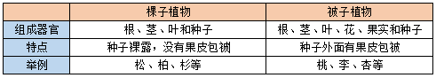
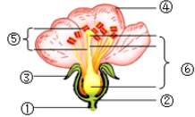
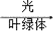
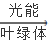
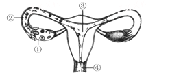

2017年北京市海淀区中考生物试题 · 选择题 第6、7、8、9、10题 · 对应解析
6. “海带炖排骨”和“紫菜蛋花汤”是人们喜爱的佳肴，海带和紫菜都属于（ ）
A. 藻类植物B. 苔藓植物C. 蕨类植物D. 种子植物
【答案】A
【解析】
【分析】藻类植物大都生活在水中，结构简单，有单细胞的，也有的多细胞，但都没有根、茎、叶的分化，用孢子繁殖后代。
【详解】海带、紫菜结构简单，没有根、茎、叶的分化，都属于藻类植物，A符合题意。
【点睛】解答此类题目的关键是熟知常见的藻类植物。
7. 国槐和侧柏是北京市的市树，月季和菊花是北京市的市花，其中属于裸子植物的是（ ）
A. 国槐B. 侧柏
C. 月季D. 菊花
【答案】B
【解析】
【分析】被子植物和裸子植物都能产生种子并靠种子繁殖后代，被称为种子植物。两者的主要区别是种子外面是否有果皮包被。

【详解】ACD、国槐、月季和菊花的种子外面有果皮包被着，属于被子植物，ACD错误。
B、侧柏的种子外面无果皮包被着，属于裸子植物，B正确。
故选B。
【点睛】本题考查的知识点是被子植物和裸子植物的比较。理解掌握裸子植物和被子植物的主要区别是种子外面有无果皮包被着是解题关键。
8. 一朵花中最主要的结构是（ ）

A. ①②B. ③⑥
C. ⑤⑥D. ④⑤
【答案】C
【解析】
【分析】图中①是花柄，②是花托，③是萼片，④是花瓣，⑤是雄蕊，⑥是雌蕊。
【详解】一朵花中只有雄蕊和雌蕊与结出果实种子有直接关系，因此花的主要结构是⑤雄蕊和⑥雌蕊，雄蕊由花药和花丝组成，雌蕊由柱头、花柱、子房组成，雄蕊和雌蕊合称花蕊。
【点睛】解答此类题目的关键是理解掌握花的结构。
9. 下列各项能正确表示光合作用的是（ ）
A. 水+二氧化碳

有机物+氧气B. 水+二氧化碳有机物+二氧化碳
C. 水+氧气有机物+氧气
D. 有机物+二氧化碳水+氧气
【答案】A
【解析】
【分析】绿色植物通过叶绿体利用光能把二氧化碳和水合成有机物，并储存能量，同时释放出氧气的过程叫光合作用。
【详解】光合作用反应式可表示为：二氧化碳+水

有机物（贮存能量）+氧气。光合作用的原料是二氧化碳和水；场所是叶绿体；条件是光；产物是：淀粉和氧。【点睛】解此题的关键是理解掌握光合作用的概念。
10. 正常情况下，人体胚胎发育的场所是（ ）

A. ①B. ②
C. ③D. ④
【答案】C
【解析】
【分析】女性的生殖系统包括卵巢，输卵管，子宫，阴道等，各有不同的用途。图示中①卵巢、②输卵管、③子宫、④阴道。
【详解】①卵巢有产生卵细胞，分泌雌性激素的作用。A错误；②输卵管输送卵子及受精完成与胚胎初期发育的地方，B错误；③人体胚胎发育的主要场所是子宫，C正确；④阴道是精子进入和胎儿产出的通道，D错误。
【点睛】解答此题的关键是熟练掌握人的生殖发育过程。